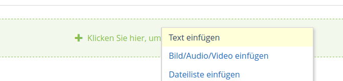

3 Videos erstellen
3.1 Videos mit Camtasia erstellen
Mit Camtasia kann der Bildschirm inklusive Sprache aufgezeichnet werden und die entstandene Aufzeichnung geschnitten, bearbeitet und erweitert werden. Das Institut besitzt Lizenzen für Camtasia. Vom Rechenzentrum gibt es ein umfassendes Video zur Erstellung von Vorlesungen und Videoinhalten mit Camtasia.
- Ab 20:50 gibt es allgemeine Empfehlungen zu Umfang und der Vorbereitung von Onlinevorlesungen.
- Ab 31:30 geht es konkret um die Programmoberfläche von Camtasia anhand einer Beispielvorlesung.
3.1.1 Praktische Tastenkombinationen zu Camtasia
Unter Windows starten Sie die Aufzeichnung mit der Taste F9 und stoppen Sie mit F10. Pausieren und Fortfahren geschieht ebenfalls durch F9.
Unter MacOS starten Sie die Aufzeichnung mit Command+Shift+2 und stoppen mit Command+Option+2. Pausieren und Fortfahren geschieht ebenfalls mit Command+Shift+2.
3.1.2 Videos aus Camtasia exportieren
Klicken Sie im grünen Menü “Weitergeben” auf “Lokale Datei” und wählen Sie “Nur MP4 (720p)”. Diese Einstellung ist für die meisten Anwendungen ausreichend und sorgt dafür, dass die Dateigröße “im Rahmen bleibt”.


3.2 Videos auf Ilias hochladen
Um Videos so auf Ilias einzubinden, dass sie direkt abspielbar sind, haben Sie folgende Möglichkeiten:
3.2.1 Direkter Upload in Ilias
Auf Kurs- und Ordner-Ebene gibt es oben auf der Seite einen Link “Seite gestalten”. Klickt man auf diesen Link, kann man anschließend über das [+]-Zeichen “Bild/Audio/Video einfügen” auswählen. Über [Datei wählen] lässt sich im nächsten Schritt z.B. eine MP4-Videodatei auswählen.


Das Einbinden auf diesem Weg funktioniert auch in anderen ILIAS-Objekten (z.B. in Wikis, Lernmodulen usw.).
Die Uploadgrenze liegt bei 500 MB pro Video. Ggf. können Sie zu große Videos konvertieren.
3.2.2 Einbetten von Youtube
Falls Sie einen Youtube-Account besitzen, können Sie ihre Videos unsichtbar als “nicht gelistet” hochladen und in Ilias einbetten.
Um Videos mit einer Länge von über 15 Minuten hochzuladen, müssen Sie einen sog. bestätigten Account haben. Dafür erhalten Sie per SMS einen Bestätigungscode (youtube.com/verify).
Zum Hochladen wählen Sie das Erstellen-Icon und “Videos hochladen”. Achten Sie beim Upload darauf, “nicht gelistet” auszuwählen, um das Video nicht auf Ihrem Youtube-Kanal zu veröffentlichen.


Warten Sie, bis das Video hochgeladen und verarbeitet wurde. Klicken Sie nun in der Videoübersicht auf das Youtube-Icon, um es anzusehen.
Wählen Sie nun “Teilen” -> “Einbetten” und aktivieren Sie den “Erweiterten Datenschutzmodus”.

Hier können Sie den Embedd-Code des Videos kopieren und in Ihre Ilias-Seite über “Seite gestalten” -> “Text einfügen” einbetten. Das Video sollte nun für alle Kursteilnehmer sichtbar sein, jedoch nicht für Besucher Ihres Youtube-Kanals.

3.2.3 Einbetten über das Objekt “Mediacast”
Das Objekt Mediacast findet man unter [Neues Objekt hinzufügen]. Der Mediacast eignet sich gut für eine Video-Reihe, also – ähnlich, wie bei einem Podcast – für ein Video-Repositorium, das regelmäßig um neue Videos ergänzt wird. Anders als bei der ersten Möglichkeit werden die Videos nicht in die Kursseite eingebunden, sondern erscheinen in einem eigenen Objekt. Es lassen sich unterschiedliche Darstellungsformen auswählen, optional kann auch ein Download ermöglicht werden.
Die Uploadgrenze liegt auch hier bei 500 MB pro Video. Ggf. können Sie zu große Videos konvertieren.
Hier finden Sie genaue Infos zum Videoupload mit Mediacast: https://ilias.uni-freiburg.de/goto.php?target=pg_57504_221303&client_id=unifreiburg
3.2.4 Einbinden über “ViMP”
Bei ViMP handelt es sich um den Videoserver der Universität Freiburg (https://videoportal.uni-freiburg.de).
Über [Neues Objekt hinzufügen] lassen sich Videos in Form eines eigenen Objekts einbinden. Sobald man eine Videodatei hochgeladen hat, wird diese automatisch und im Hintergrund ins korrekte Format konvertiert. Die Uploadgrenze liegt bei 10 GB, d.h., diese Methode eignet sich gut für größere Videodateien. Die Videos lassen sich über das Plugin verwalten und können z.B. auch in unterschiedliche Kurse eingebunden werden, ohne dass man sie mehrfach hochladen muss. Es besteht außerdem ein erweiterter Content-Schutz und die Möglichkeit, ein ViMP-Video über “Seite gestalten” einzubinden.
Hier finden Sie eine bebilderte Anleitung zum Einbinden über ViMP: https://ilias.uni-freiburg.de/goto.php?target=wiki_1229029_ViMP-Objekt
3.2.5 Interaktives Video
Mit Hilfe dieses Werkzeuges können Sie im Video an beliebigen Stellen Fragen platzieren, die beim Abspielen des Videos angezeigt werden, während das Video pausiert. Zudem können die Lernenden und die Lehrenden einzelne Zeitpunkte oder ganz Passagen im Video annotieren bzw. kommentieren und, falls gewünscht, die Kommentare der anderen Lernenden sehen. Alles, was dazu benötigt wird, ist eine Video- oder Audio-Datei, die einfach auf ILIAS hochgeladen werden muss und von den gängigen Browsern wiedergegeben werden kann (z.B. MP4/h.264).
Über [Neues Objekt hinzufügen] können Sie das Objekt “Interaktives Video” erzeugen. Die Uploadgrenze liegt bei 500 MB. Sie können aber auch Videos von youtube oder vimeo einbinden oder eine direkte URL zu einer Mediendatei im Web angeben.
Hier finden Sie weitere Infos zu Interaktiven Videos: https://ilias.uni-freiburg.de/goto.php?target=pg_37783_221303&client_id=unifreiburg
3.3 Zu große Videos konvertieren
Sollte Ihr Video größer als das Uploadlimit sein, können Sie es mit einem Videokonverter in ein kompaktes Format umwandeln. Eine gute kostenfreie Software ist Handbrake.
Kurzanleitung Handbrake
Wählen Sie Quelle in der Werkzeugleiste oder ziehen Sie das Video per Drag & Drop in das Fenster.

Bild- und Videoeinstellungen wählen
Geben Sie im Reiter Bild für Speichergeometrie (Auflösung) 1280x720 ein. Im Reiter Video stellen Sie die Bildrate auf “Wie Quelle” und geben eine Bitrate ein. Für Bildschirmaufzeichnungen sind Werte von 500 bis 1500 ausreichend, für bewegte Videos sind 5000 empfehlenswert.

Den Ausgabeordner wählen
Geben Sie einen Ausgabeordner und Dateinamen an. Dort wird das fertige Video gespeichert. Die Dateiendung sollte auf .mp4 oder .m4v gestellt sein.

Wählen Sie den Start-Knopf in der Werkzeugleiste, um den Kodiervorgang zu starten.
Die kovertierten Videos sollten nun kleiner als 500 MB sein und auf Ilias hochgeladen werden können.